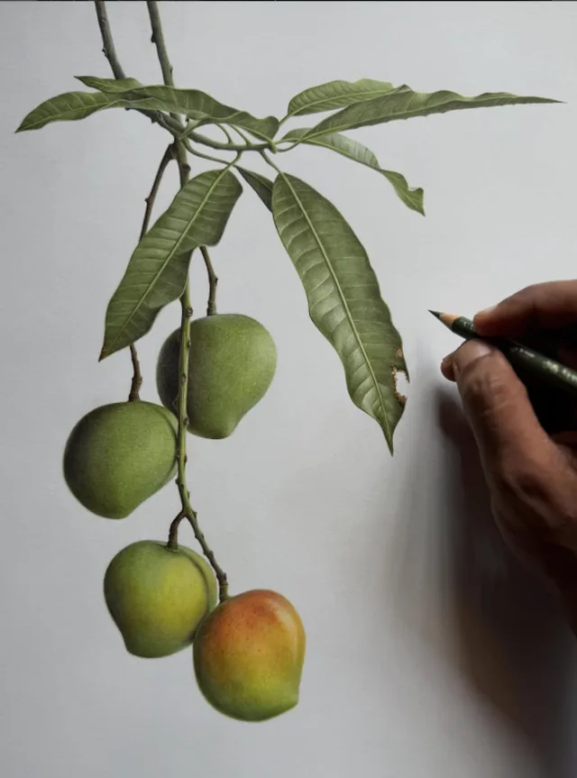

Designing clarity. Shaping decisions. Building trust.
- ◎Research
- ▦Design systems
- ◧UI/UX
- ◆Strategy
- ⟲Prototyping
- ✦AI workflows
Ajith Alphonse
UI/UX Designer · Salt Lake City, Utah
I turn complex systems into interfaces people can trust. Over five-plus years I’ve designed where the stakes are quiet but real: the payment moment at Flipkart, a fulfillment decision workspace for Amazon operations, and campaign readiness across Adobe’s GenStudio ecosystem.
I’m finishing an MS in Information Systems at the University of Utah, so I care as much about how the system works as how the screen looks. When something is uncertain, I’d rather show that honestly than hide it behind a spinner.
You’d get a designer who starts with the decision, not the screen. I map where people lose confidence, then design the states nobody asks for: pending, failed, partly done, not yet verified.
I prototype until research and engineering can poke real holes in it, and I keep targets and results clearly apart. I’m open to UI/UX and product design roles.
I work closest with research, product and engineering. I share early and messy, label my assumptions, and ask for critique often because it makes the work better.
On Adobe Campaign Readiness I led the design with product designers, UX research, product management and engineering. On APEX I worked alongside UX research, product and engineering across eight connected workflows.
If your product has moving parts like money, inventory, approvals or AI output, I can help it feel calm. I’m good at the first messy map, the flow that holds up under edge cases, and a clickable prototype you can put in front of users.
Bring me the part your team argues about most. That’s usually where the design is.
Brand strategy
I find the problem worth solving, and the reason people should care.
Brand identity
A look, feel and voice that are unmistakably yours, from logo to layout.
Product design
Flows built around the decision people actually need to make.
UI/UX design
Clear screens, honest states and interactions that feel calm.
Design systems
Reusable parts and rules, so the hundredth screen is as good as the first.
Prototyping
Clickable prototypes early, so research and engineering can poke real holes.
Illustration
Pencil first: portraits, sketches and the small details that make work feel human.
Brand design
I still draw people. Small details are where trust lives.




Let’s collaborate on something people trust.
Got something complex and human in the works? I’d love to hear about it.
© 2026 Ajith Alphonse · Designed and built at odd hours, refined the next morning.